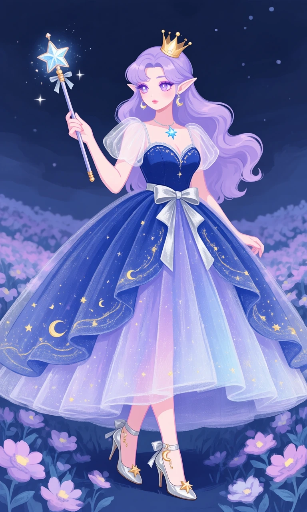
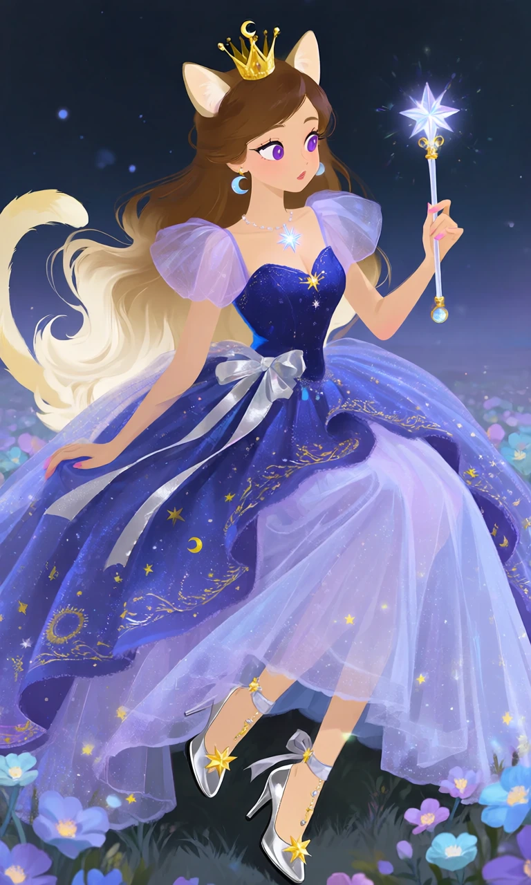

Crescent Wish

Outfit Prompt
She wears a magical midnight-blue princess gown with an enormous flowing ballgown skirt, layers of lavender and pale-blue tulle, delicate golden stars, crescent moons, and shimmering celestial embroidery. The fitted bodice has a sweetheart neckline, translucent puff sleeves, and a large silver ribbon at the waist.
Accessories include a tiny golden crescent-moon crown, a sparkling star-shaped wand, dangling moon earrings, and a delicate necklace with a glowing blue star pendant.
Her shoes are elegant silver princess heels with ankle ribbons, golden star decorations, and tiny crescent-moon charms.
Outfit Examples



